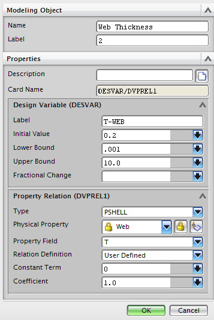

设计变量是为了实现最优设计而允许由求解器改变的独立数量。上限和下限定义了 允许的范围。
优化算法将在搜索优化值时调整设计变量。
可以在 NX 中使用四种类型的设计变量：
属性—物理属性字段设计变量，如 PSHELL 中的 T 字段(厚度)、PBEAML 中的 DIM1 等。在 Nastran 中，此类型会创建 DESVAR 和 DVPREL1的组合
复合属性—复合属性字段设计变量，如层片厚度(Ti)。此类型会创建 DESVAR 和 DVPREL1 的组合
材料—材料属性字段设计变量，. 如 MAT1 材料中的杨氏模量值。在 Nastran 中，此类型会创建 DESVAR 和 DVPREL1 的组合
连接性(单元定义中的字段)—单元定义字段设计变量，如 CQUAD4 单元中的 ZOFFS 字段(Z 偏置)。此类型会创建 DESVAR 和 DVPREL1 的组合

定义设计变量时，在初始值、下限以及上限中输入的值取决于关系定义选项的选择：
在导出时指派 — 初始值和下限/上限表示比例因子。例如，可使用比例因子 1.0、下限 0.5、上限 2.0 使壳厚度发生变化。如果壳厚度的当前值为0.2，那么解算方案中使用的实际变量范围即为0.1到0.4
用户定义 — 初始值和下限/上限表示实际值。例如，可使用起始值 0.2 mm、下限 0.1 mm 和上限 2 mm 使壳厚度发生变化。常数项(C0)和系数(COEF)字段可以用于根据等式 Pi = C0 + COEF * DVID，来线性调整变量范围(DVID)。